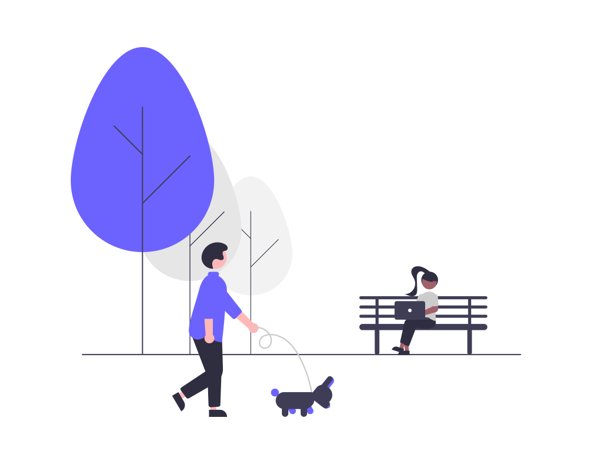

conoce tu mundo!

1Ventajas de caminar
Un buen paseo puede ayudar a fortalecer y dar forma a las piernas, dándole definición a las pantorrillas, cuádriceps e isquiotibiales y el levantando los glúteos. Ahora bién, si realmente presta atención a la postura mientras camina, también puede tonificar los abdominales y reducir gradualmente su cintura
2Ventajas de un buen cafe mañanero
Además de brindar una dosis significativa de antioxidantes, tener el hábito de tomar un café diario por la mañana también puede ayudar a prevenir diversas dolencias, incluida la diabetes tipo 2, la enfermedad de Parkinson, el cáncer de colon y el de mama.
AUn
1Ventajas de caminar
Un buen paseo puede ayudar a fortalecer y dar forma a las piernas, dándole definición a las pantorrillas, cuádriceps e isquiotibiales y el levantando los glúteos. Ahora bién, si realmente presta atención a la postura mientras camina, también puede tonificar los abdominales y reducir gradualmente su cintura
2Ventajas de un buen cafe mañanero
Además de brindar una dosis significativa de antioxidantes, tener el hábito de tomar un café diario por la mañana también puede ayudar a prevenir diversas dolencias, incluida la diabetes tipo 2, la enfermedad de Parkinson, el cáncer de colon y el de mama.